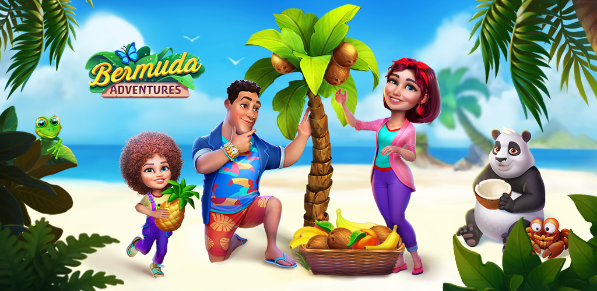

Bermuda Adventures es un simpático videojuego casual en el que podremos vivir en primera persona la nueva aventura de esta familia que, tras un accidente de avión, deciden montárselo a lo grande y disfrutar de la supervivencia en las islas Bermudas.
